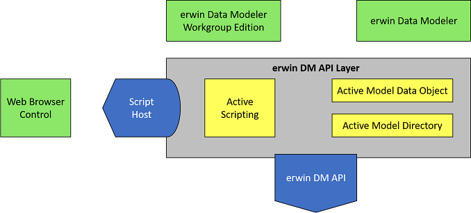

The typical use cases of the API are automation and scripts to support specific interface design requirements imposed by COM automation standards. For example, you can be limited to a single incoming and outgoing interface exposed by any particular COM object. This limitation is due to the fact that the only recognizable interface type for pure automation is IDispatch and it renders the use of QueryInterface functionality unfit. The common technique to address the problem includes Alternate Identities and read-only properties that expose secondary interfaces.
Another example of a targeted domain customer is one using alternative (not C++) languages to implement a client. The list includes Visual Basic, VB Script, Java Script, and so on. The list includes specially tailored language idioms to encapsulate language-COM binding, such as collections of objects, connection points, rich error handling, and so on.
The API combines number of components and presents them as a set of interfaces accessible using COM.
The list of integrated components includes erwin Data Modeler and Microsoft Internet Explorer.
